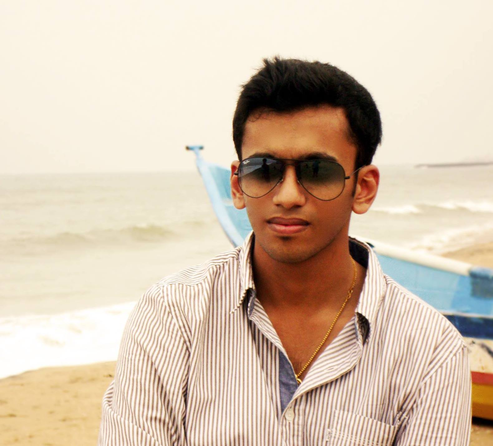

<div class="container">
	<div class="row">
        <div id="speaker-detail" class="col-lg-6 col-lg-offset-3">
            <div class="row">
            	<button title="Close (Esc)" type="button" class="mfp-close">×</button>
                
                <div class="col-md-4 col-lg-4">
                    <br />
                    <i class="fa fa-lg fa-github-alt"></i><a href="https://github.com/kingspp?tab=repositories">Github</a><br/>
                    <i class="fa fa-lg fa-facebook-square"></i><a href="https://www.facebook.com/kingspprathyush">Facebook</a></br> 					
					<i class="fa fa-lg fa-google-plus-square"></i><a href="https://plus.google.com/u/0/+PrathyushSP/">Google +</a></br> 					
					<i class="fa fa-lg fa-linkedin-square"></i><a href="https://www.linkedin.com/pub/s-p-prathyush/12/a77/732">LinkedIn</a></br> 					
					<i class="fa fa-lg fa-wordpress"></i><a href="https://www.codetronix.in">Code-Tronix</a> 					
                </div>
				
				
                    
                <div class="col-md-8 col-lg-8">
                    <h2>Prathyush SP</h2>
                    <h3>Lead Developer / Designer</h3>
                    <p>Prathyush SP, founder of Code-Tronix, a student of MIT, pursuing engineering in Electronics and Communication branch. He did his schooling in C.F.T.R.I, completed high school and college in Marimallappa's institution. Due to his interest in computers and their operations, he took advanced computer courses like JAVA/J2EE in NIIT. Since he was fascinated by the world of electronics, he joined E&CE. Currently he is working on "PiScope" under the guidance of Prof.Srinivas. His hobbies include learning different programming languages, building websites, martial arts (kick boxing), instrumentals and so on.</p>
                </div>
            
            </div>
        </div>
    </div>
</div>